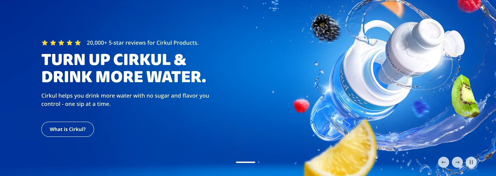

Cirkul · Homepage redesign · Case study
The audience
- For every 100 visitors to Cirkul's homepage…
- 52 never reached a product.
- The surprise: 80 had been here before. They came to buy.
- But the page made everyone read first.
- The brief was written for the 20.

Lead UX Designer · 12 weeks · 2024
Cirkul Homepage
One page, two audiences, and a brief the data rewrote.
- −28%funnel drop‑off
- +2.8%first‑time buyer conversion
- +2.5%revenue per visitor
A/B tested on a storefront serving 37M sessions and $90M in revenue.
02
The data that changed the brief.
- The brief: acquisition‑first, top‑to‑bottom brand education.
- For 80% of visitors, that meant reading before shopping.
- I reframed it with stakeholders: new‑user education and returning‑user efficiency.
- Shop lanes moved up, right under the hero. Education stayed, below them.
Initial directionAcquisition‑first
- Hero / value prop
- Benefits
- How it works
- Flavor explorer
- Testimonials
- Subscription
- Store locator
- FAQ
Adjusted directionHigh‑intent path early
- Hero / value prop
- Shop lanes · categories
- Shop lanes · best sellers
- Benefits
- How it works
- Flavor explorer
- Testimonials
- Subscription
- Store locator
- FAQ
Two audiences. One frame.
A concise value statement up top, shop lanes immediately after. Education preserved for new visitors, with zero added friction for the 80%.
03
Orient. Shop. Understand. Commit.
- OrientValue prop above the fold, product in frame. One hero, both audiences.
- ShopCategory lanes, then carousels ranked by real sales data. Returning users reach product in one scroll.
- UnderstandBenefit modules built for under‑five‑second reads, then how it works, step by step. Made with the creative team.
04
Validated with real traffic, not opinions.
- Optimizely · 50/50 split
- ~150k sessions
- 2‑week window
- Hotjar scroll + behavior
- The primary goal: move more people into product discovery.
- And the education layer was being found, not skipped.
- New visitors converted more often.
- The returning 80% didn't pay for it. The hybrid traded nothing.
Back to the pipe · Variant B
A shorter pipe
- Same sections. New order: shop lanes moved up, right under the hero.
- The path to a product got shorter.
- 37 of every 100 left, down from 52. About 15 more reached a product.
- We didn't plug the leak. We shortened the pipe.
Looking back · What this project sharpened
Looking back
-
01Interrogate the brief before designing to it.
The data redefined the whole page architecture. The most valuable design work happened before any frames existed.
-
02Communicate early, and often.
High‑risk pages need clear, confident communication across teams and stakeholders. Reframing an acquisition brief meant bringing everyone along.
-
03Honest metrics build more trust than big ones.
Attributed deltas, with baselines and method, beat impressive absolute numbers.
Fin.
Cirkul Homepage
- −28%funnel drop‑off
- +29%scroll depth
- +2.8%first‑time buyer conversion
- +2.5%revenue per visitor
Lead UX Designer Andrew Arquines · with Cirkul brand & creative · Optimizely · Hotjar · 2024